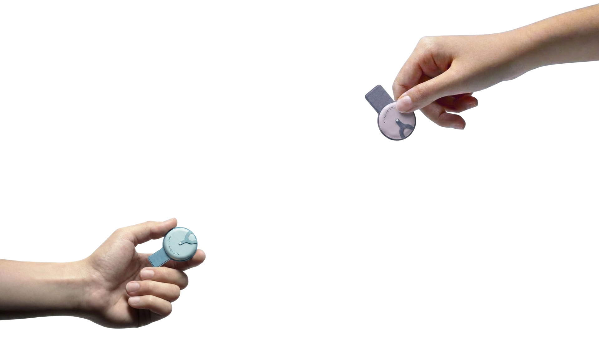
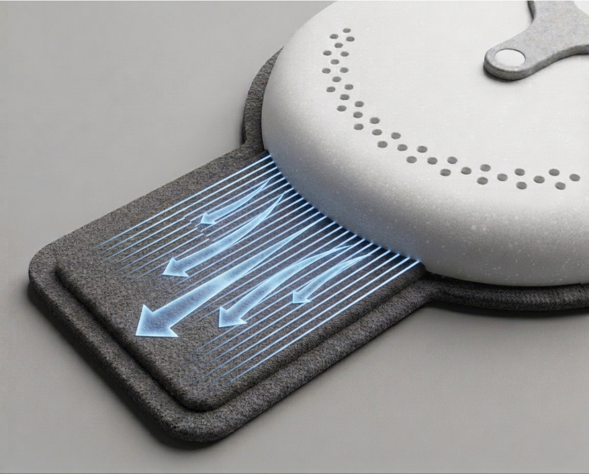
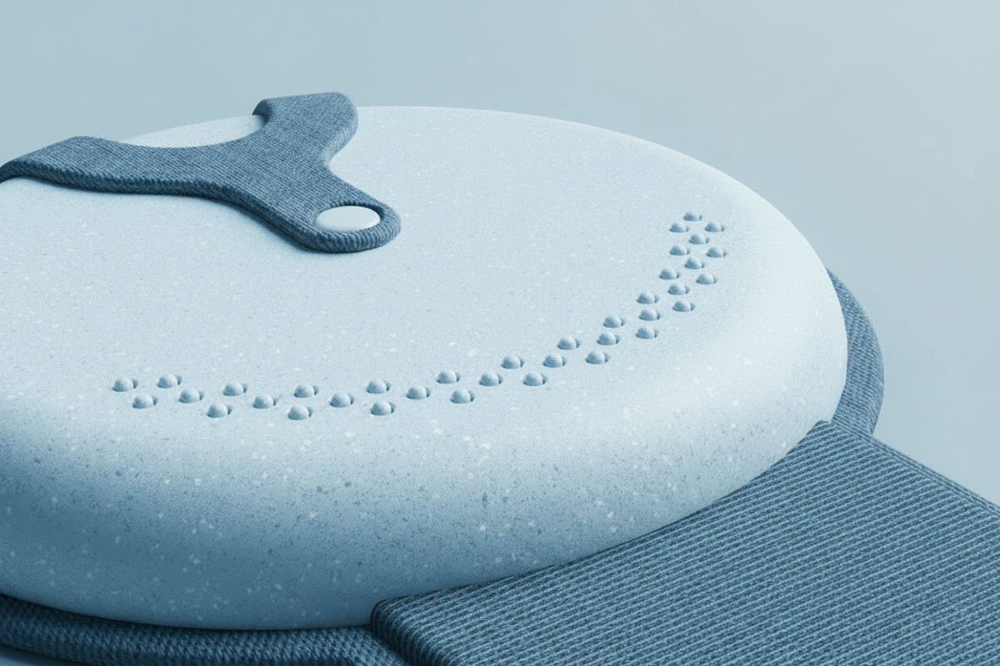
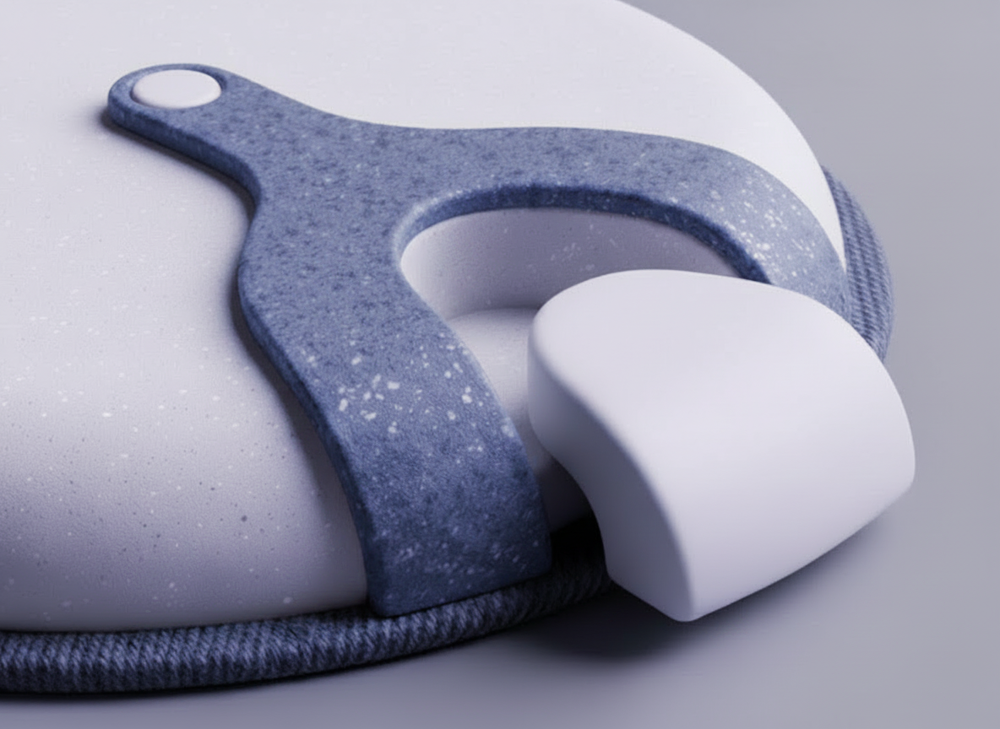
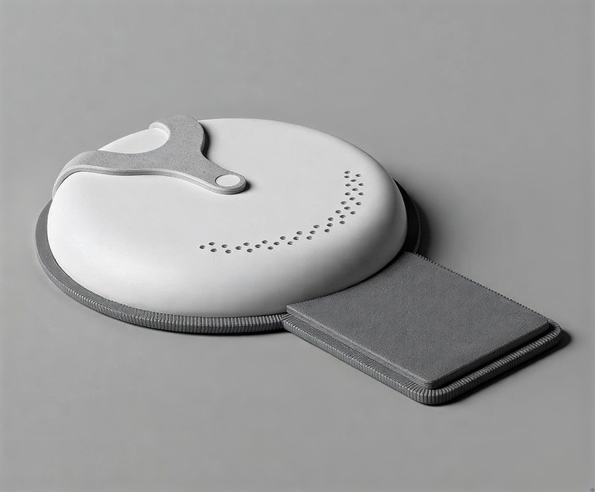
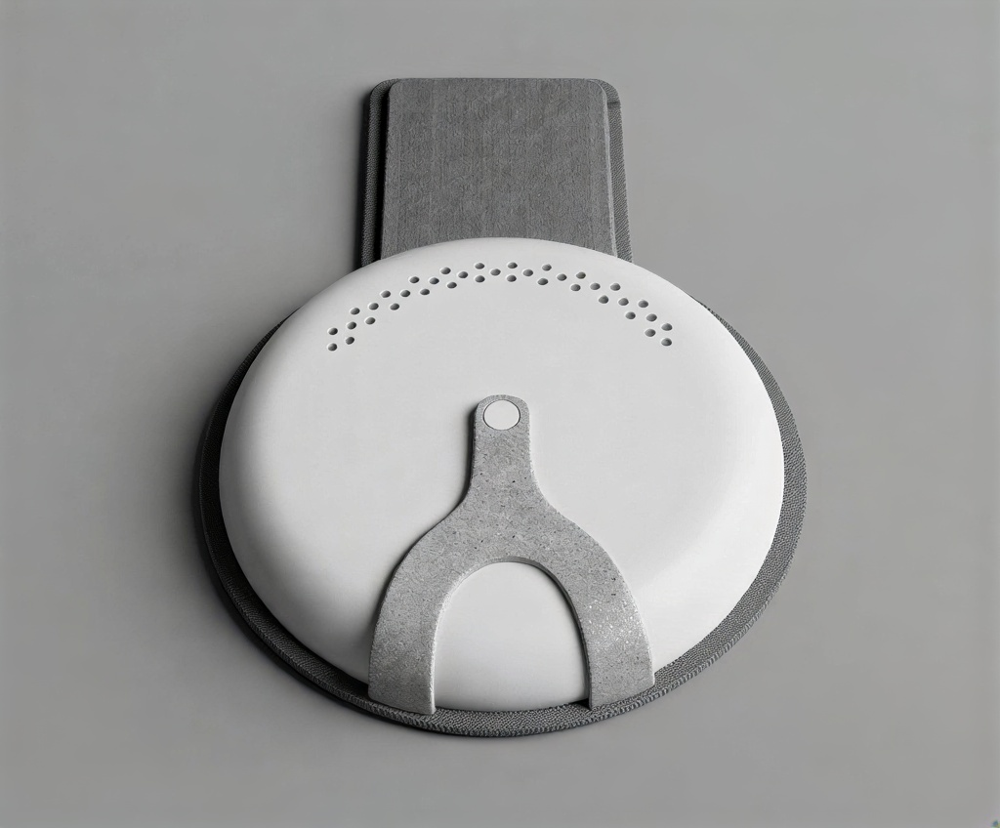
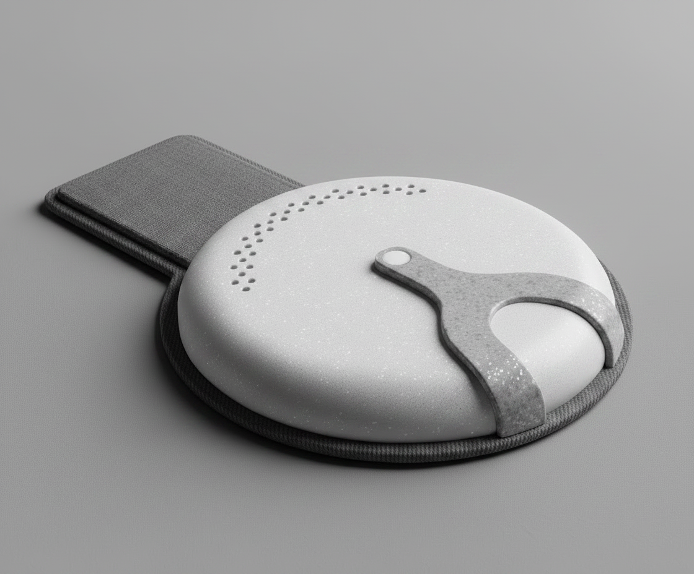
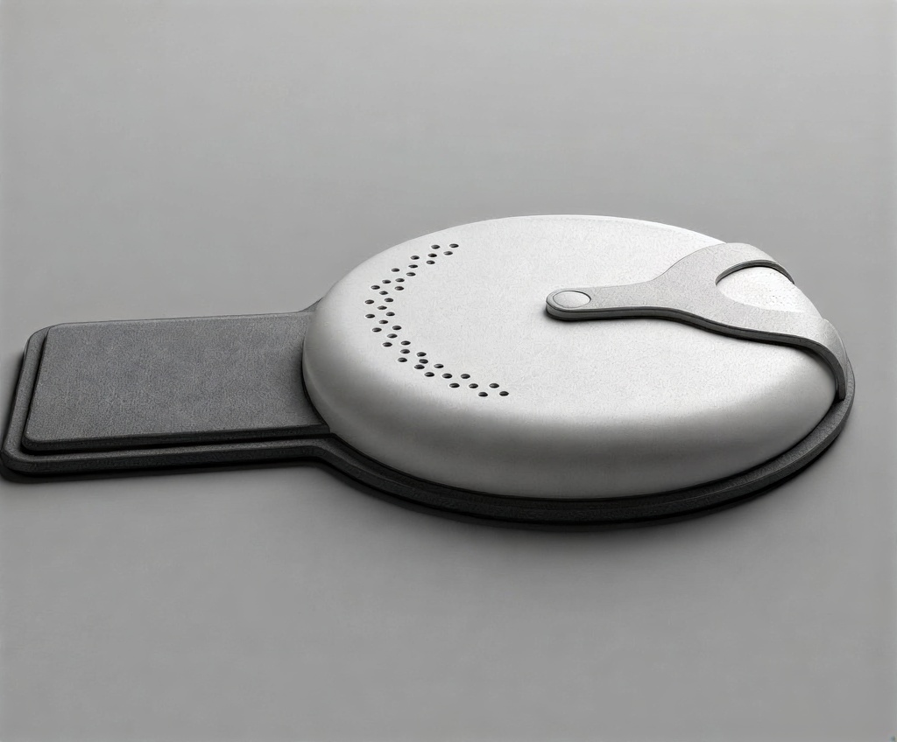

Goyo
실시간 생체 데이터를 안심으로 전환하는 패치형 웨어러블

About
매 순간 건강 수치를 확인해야만 안심이 되는 ‘데이터 의존의 시대’.
하지만 숫자가 사라지는 순간, 막연한 불안과 고립감은 더 커집니다.
고요는 그 공백을 감각적 신호로 채워 ‘안심’을 전달하는 패치형 웨어러블입니다.
Core Technologies

Haptic Breathing
와이어의 수축과 이완을 통해 물리적인 호흡 리듬을 유도하며 사용자의 긴장을 완화합니다.

Physical Embossing
기기가 꺼지기 직전 물리적 돌기가 돌출되어, 생체 데이터를 촉각 신호로 변환해 전달합니다.

Hot-Swap Battery
자석 결합을 통해 피부에서 패치를 뗄 필요 없이 배터리 모듈만 신속하게 교체합니다.
In Use


Color System
고요의 컬러는 저채도의 뮤트 톤을 기반으로, 신뢰와 감각, 그리고 안정의 흐름을 시각적으로 담아냅니다.
Detail



